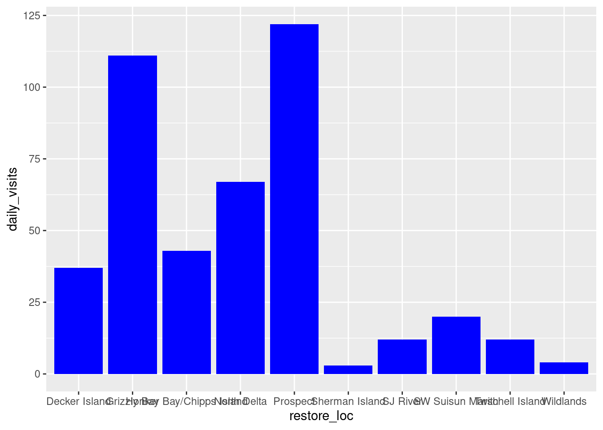

library(readr)
library(dplyr)
library(tidyr)
library(forcats) # makes working with factors easier
library(ggplot2)
library(leaflet) # interactive maps
library(DT) # interactive tables
library(scales) # scale functions for visualization
library(janitor) # expedite cleaning and exploring data
library(viridis) # colorblind friendly color palletdata-visualization
Setup
Load Packages
Load Data
delta_visits <- read_csv("https://portal.edirepository.org/nis/dataviewer?packageid=edi.587.1&entityid=cda8c1384af0089b506d51ad8507641f") %>%
janitor::clean_names() ## Introducing this new package!Explore Data
## Check out column names
colnames(delta_visits) [1] "eco_restore_approximate_location" "reach"
[3] "latitude" "longitude"
[5] "date" "time_of_day"
[7] "sm_boat" "med_boat"
[9] "lrg_boat" "bank_angler"
[11] "scientist" "cars"
[13] "notes" ## Peak at each column and class
glimpse(delta_visits)Rows: 55
Columns: 13
$ eco_restore_approximate_location <chr> "Decker Island", "Decker Island", "De…
$ reach <chr> "Brannan to Decker Island", "Decker I…
$ latitude <dbl> 38.10587, 38.10587, 38.08456, 38.0845…
$ longitude <dbl> -121.7064, -121.7064, -121.7204, -121…
$ date <date> 2017-07-07, 2017-07-07, 2017-07-07, …
$ time_of_day <chr> "unknown", "unknown", "unknown", "unk…
$ sm_boat <dbl> 0, 0, 0, 0, 2, 0, 0, 7, 1, 0, 0, 0, 0…
$ med_boat <dbl> 2, 4, 0, 1, 10, 0, 0, 1, 2, 0, 1, 6, …
$ lrg_boat <dbl> 0, 0, 0, 0, 1, 0, 0, 0, 0, 0, 0, 0, 0…
$ bank_angler <dbl> 1, 3, 0, 0, 0, 0, 0, 0, 2, 0, 0, 5, 0…
$ scientist <dbl> 0, 0, 0, 0, 0, 0, 0, 0, 0, 0, 0, 0, 0…
$ cars <dbl> 0, 0, 0, 0, 0, 0, 0, 0, 0, 0, 0, 0, 0…
$ notes <chr> "no notes", "no notes", "Nobody or tr…## From when to when
range(delta_visits$date)[1] "2017-07-07" "2018-03-13"## First and last rows
head(delta_visits)# A tibble: 6 × 13
eco_restore…¹ reach latit…² longi…³ date time_…⁴ sm_boat med_b…⁵ lrg_b…⁶
<chr> <chr> <dbl> <dbl> <date> <chr> <dbl> <dbl> <dbl>
1 Decker Island Bran… 38.1 -122. 2017-07-07 unknown 0 2 0
2 Decker Island Deck… 38.1 -122. 2017-07-07 unknown 0 4 0
3 Decker Island Deck… 38.1 -122. 2017-07-07 unknown 0 0 0
4 Decker Island Deck… 38.1 -122. 2017-09-13 unknown 0 1 0
5 Decker Island Bran… 38.1 -122. 2017-11-07 unknown 2 10 1
6 Decker Island Deck… 38.1 -122. 2017-11-07 unknown 0 0 0
# … with 4 more variables: bank_angler <dbl>, scientist <dbl>, cars <dbl>,
# notes <chr>, and abbreviated variable names
# ¹eco_restore_approximate_location, ²latitude, ³longitude, ⁴time_of_day,
# ⁵med_boat, ⁶lrg_boattail(delta_visits)# A tibble: 6 × 13
eco_restore…¹ reach latit…² longi…³ date time_…⁴ sm_boat med_b…⁵ lrg_b…⁶
<chr> <chr> <dbl> <dbl> <date> <chr> <dbl> <dbl> <dbl>
1 Honker Bay/C… Honk… 38.1 -122. 2017-12-01 unknown 0 1 1
2 Twitchell Is… levee 38.1 -122. 2018-03-13 morning 0 5 0
3 Twitchell Is… Twit… 38.1 -122. 2018-03-13 morning 0 0 0
4 Twitchell Is… Twit… 38.1 -122. 2018-03-13 morning 0 0 0
5 Sherman Isla… Truc… 38.0 -122. 2018-03-13 unknown 0 0 0
6 Sherman Isla… Sher… 38.0 -122. 2018-03-13 unknown 0 0 0
# … with 4 more variables: bank_angler <dbl>, scientist <dbl>, cars <dbl>,
# notes <chr>, and abbreviated variable names
# ¹eco_restore_approximate_location, ²latitude, ³longitude, ⁴time_of_day,
# ⁵med_boat, ⁶lrg_boat## Which time of day?
unique(delta_visits$time_of_day)[1] "unknown" "morning"Get Data Ready
Make Long
visits_long <- delta_visits %>%
pivot_longer(cols = c("sm_boat", "med_boat", "lrg_boat", "bank_angler", "scientist", "cars"),
names_to = "visitor_type",
values_to = "quantity") %>%
rename(restore_loc = eco_restore_approximate_location) %>%
select(-notes)
## Checking the outcome
head(visits_long)# A tibble: 6 × 8
restore_loc reach latit…¹ longi…² date time_…³ visit…⁴ quant…⁵
<chr> <chr> <dbl> <dbl> <date> <chr> <chr> <dbl>
1 Decker Island Brannan to D… 38.1 -122. 2017-07-07 unknown sm_boat 0
2 Decker Island Brannan to D… 38.1 -122. 2017-07-07 unknown med_bo… 2
3 Decker Island Brannan to D… 38.1 -122. 2017-07-07 unknown lrg_bo… 0
4 Decker Island Brannan to D… 38.1 -122. 2017-07-07 unknown bank_a… 1
5 Decker Island Brannan to D… 38.1 -122. 2017-07-07 unknown scient… 0
6 Decker Island Brannan to D… 38.1 -122. 2017-07-07 unknown cars 0
# … with abbreviated variable names ¹latitude, ²longitude, ³time_of_day,
# ⁴visitor_type, ⁵quantityPlotting with ggplot2
ggplot(visits_long, aes(x = restore_loc, y = quantity))+
geom_col()daily_visits = visits_long %>%
group_by(restore_loc, date, visitor_type) %>%
summarise(daily_visits = sum(quantity))
head(daily_visits)# A tibble: 6 × 4
# Groups: restore_loc, date [1]
restore_loc date visitor_type daily_visits
<chr> <date> <chr> <dbl>
1 Decker Island 2017-07-07 bank_angler 4
2 Decker Island 2017-07-07 cars 0
3 Decker Island 2017-07-07 lrg_boat 0
4 Decker Island 2017-07-07 med_boat 6
5 Decker Island 2017-07-07 scientist 0
6 Decker Island 2017-07-07 sm_boat 0Daily Visit locations
daily_visits_loc <- visits_long %>%
group_by(restore_loc, date, visitor_type) %>%
summarise(daily_visits = sum(quantity))`summarise()` has grouped output by 'restore_loc', 'date'. You can override
using the `.groups` argument.head(daily_visits_loc)# A tibble: 6 × 4
# Groups: restore_loc, date [1]
restore_loc date visitor_type daily_visits
<chr> <date> <chr> <dbl>
1 Decker Island 2017-07-07 bank_angler 4
2 Decker Island 2017-07-07 cars 0
3 Decker Island 2017-07-07 lrg_boat 0
4 Decker Island 2017-07-07 med_boat 6
5 Decker Island 2017-07-07 scientist 0
6 Decker Island 2017-07-07 sm_boat 0ggplots
## Option 1 - data and mapping called in the ggplot() function
ggplot(data = daily_visits_loc,
aes(x = restore_loc, y = daily_visits))+
geom_col()
## Option 2 - data called in ggplot function; mapping called in geom
ggplot(data = daily_visits_loc) +
geom_col(aes(x = restore_loc, y = daily_visits))
## Option 3 - data and mapping called in geom
ggplot() +
geom_col(data = daily_visits_loc,
aes(x = restore_loc, y = daily_visits))Boxplot
daily_visits_loc %>%
separate(date, c("year", "month", "day"), sep = "-") %>%
filter(daily_visits < 30,
visitor_type %in% c("sm_boat", "med_boat", "lrg_boat")) %>%
ggplot(aes(x = visitor_type, y = daily_visits)) +
geom_boxplot()
Violin Plots
daily_visits_loc %>%
separate(date, c("year", "month", "day"), sep = "-") %>%
filter(daily_visits < 30,
visitor_type %in% c("sm_boat", "med_boat", "lrg_boat")) %>%
ggplot(aes(x = visitor_type, y = daily_visits)) +
geom_violin()Line and Point
daily_visits_loc %>%
filter(restore_loc == "Decker Island",
visitor_type == "med_boat") %>%
ggplot(aes(x = date, y = daily_visits)) +
geom_line() +
geom_point()Customize plots
ggplot(data = daily_visits_loc,
aes(x = restore_loc, y = daily_visits,
fill = "blue"))+
geom_col()
Change color
ggplot(data = daily_visits_loc,
aes(x = restore_loc, y = daily_visits))+
geom_col(fill = "blue")
Color by Visitor type
ggplot(data = daily_visits_loc,
aes(x = restore_loc, y = daily_visits,
fill = visitor_type))+
geom_col()
33 Setting ggplot themes
ggplot(data = daily_visits_loc,
aes(x = restore_loc, y = daily_visits,
fill = visitor_type))+
geom_col()+
labs(x = "Restoration Location",
y = "Number of Visits",
fill = "Type of Visitor",
title = "Total Number of Visits to Delta Restoration Areas by visitor type",
subtitle = "Sum of all visits during July 2017 and March 2018")+
coord_flip()+
theme_bw()
Theme function for ggplot
ggplot(data = daily_visits_loc,
aes(x = restore_loc, y = daily_visits,
fill = visitor_type))+
geom_col()+
labs(x = "Restoration Location",
y = "Number of Visits",
fill = "Type of Visitor",
title = "Total Number of Visits to Delta Restoration Areas by visitor type",
subtitle = "Sum of all visits during study period")+
coord_flip()+
theme_bw()+
theme(legend.position = "bottom",
axis.ticks.y = element_blank()) ## note we mention y-axis hereSave ggplot theme
my_theme <- theme_bw(base_size = 16) +
theme(legend.position = "bottom",
axis.ticks.y = element_blank())ggplot + myTheme
ggplot(data = daily_visits_loc,
aes(x = restore_loc, y = daily_visits,
fill = visitor_type))+
geom_col()+
labs(x = "Restoration Location",
y = "Number of Visits",
fill = "Type of Visitor",
title = "Total Number of Visits to Delta Restoration Areas by visitor type",
subtitle = "Sum of all visits during study period")+
coord_flip()+
my_themeScale y-axis
ggplot(data = daily_visits_loc,
aes(x = restore_loc, y = daily_visits,
fill = visitor_type))+
geom_col()+
labs(x = "Restoration Location",
y = "Number of Visits",
fill = "Type of Visitor",
title = "Total Number of Visits to Delta Restoration Areas by visitor type",
subtitle = "Sum of all visits during study period")+
coord_flip()+
scale_y_continuous(breaks = seq(0,120, 20), expand = c(0,0))+
my_themeReorder Classes
Create new variable
daily_visits_totals <- daily_visits_loc %>%
group_by(restore_loc) %>%
mutate(n = sum(daily_visits)) %>%
ungroup()
head(daily_visits_totals)# A tibble: 6 × 5
restore_loc date visitor_type daily_visits n
<chr> <date> <chr> <dbl> <dbl>
1 Decker Island 2017-07-07 bank_angler 4 37
2 Decker Island 2017-07-07 cars 0 37
3 Decker Island 2017-07-07 lrg_boat 0 37
4 Decker Island 2017-07-07 med_boat 6 37
5 Decker Island 2017-07-07 scientist 0 37
6 Decker Island 2017-07-07 sm_boat 0 37Plot reordered data
ggplot(data = daily_visits_totals,
aes(x = fct_reorder(restore_loc, n), y = daily_visits,
fill = visitor_type))+
geom_col()+
labs(x = "Restoration Location",
y = "Number of Visits",
fill = "Type of Visitor",
title = "Total Number of Visits to Delta Restoration Areas by visitor type",
subtitle = "Sum of all visits during study period")+
coord_flip()+
scale_y_continuous(breaks = seq(0,120, 20), expand = c(0,0))+
my_themeReverse the order
ggplot(data = daily_visits_totals,
aes(x = fct_reorder(restore_loc, desc(n)), y = daily_visits,
fill = visitor_type))+
geom_col()+
theme_bw()+
coord_flip()+
scale_y_continuous(breaks = seq(0,120, 20), expand = c(0,0))+
labs(x = "Restoration Location",
y = "Number of Visits",
fill = "Type of Visitor",
title = "Total Number of Visits to Delta Restoration Areas by visitor type",
subtitle = "Sum of all visits during study period")+
my_theme
Color with Viridis
ggplot(data = daily_visits_totals,
aes(x = fct_reorder(restore_loc, desc(n)), y = daily_visits,
fill = visitor_type))+
geom_col()+
theme_bw()+
coord_flip()+
scale_y_continuous(breaks = seq(0,120, 20), expand = c(0,0))+
scale_fill_viridis_d()+
labs(x = "Restoration Location",
y = "Number of Visits",
fill = "Type of Visitor",
title = "Total Number of Visits to Delta Restoration Areas by visitor type",
subtitle = "Sum of all visits during study period")+
my_themeSave ggplot
ggsave("figures/visit_restore_site_delta.jpg", width = 12, height = 6, units = "in")Facet Plots
Create multiple plots
facet_plot <- ggplot(data = daily_visits_totals,
aes(x = visitor_type, y = daily_visits,
fill = visitor_type))+
geom_col()+
theme_bw()+
facet_wrap(~restore_loc,
scales = "free_y",
ncol = 5,
nrow = 2)+
scale_fill_viridis_d()+
labs(x = "Type of visitor",
y = "Number of Visits",
title = "Total Number of Visits to Delta Restoration Areas",
subtitle = "Sum of all visits during study period")+
theme_bw()+
theme(legend.position = "bottom",
axis.ticks.x = element_blank(),
axis.text.x = element_blank())
facet_plot
Save facet plots
ggsave("figures/visit_restore_site_facet.jpg", facet_plot, width = 12, height = 8, units = "in")Tables with DT
Create dataframe
locations <- visits_long %>%
distinct(restore_loc, .keep_all = T) %>%
select(restore_loc, latitude, longitude)
head(locations)# A tibble: 6 × 3
restore_loc latitude longitude
<chr> <dbl> <dbl>
1 Decker Island 38.1 -122.
2 SW Suisun Marsh 38.2 -122.
3 Grizzly Bay 38.1 -122.
4 Prospect 38.2 -122.
5 SJ River 38.1 -122.
6 Wildlands 38.3 -122.Display interactive table
datatable(locations)Maps with leaflet
Spatial interactive map
leaflet(locations) %>%
addTiles() %>%
addMarkers(
lng = ~ longitude,
lat = ~ latitude,
popup = ~ restore_loc
)Import Web Map Service (WMS)
leaflet(locations) %>%
addWMSTiles(
"https://basemap.nationalmap.gov/arcgis/services/USGSTopo/MapServer/WmsServer",
layers = "0",
options = WMSTileOptions(format = "image/png", transparent = TRUE)) %>%
addCircleMarkers(
lng = ~ longitude,
lat = ~ latitude,
popup = ~ restore_loc,
radius = 5,
# set fill properties
fillColor = "salmon",
fillOpacity = 1,
# set stroke properties
stroke = T,
weight = 0.5,
color = "white",
opacity = 1)Base Maps
leaflet(locations) %>%
addWMSTiles(
"https://basemap.nationalmap.gov/arcgis/services/USGSImageryTopo/MapServer/WmsServer",
layers = "0",
options = WMSTileOptions(format = "image/png", transparent = TRUE)) %>%
addWMSTiles(
"https://basemap.nationalmap.gov/arcgis/services/USGSHydroCached/MapServer/WmsServer",
layers = "0",
options = WMSTileOptions(format = "image/png", transparent = TRUE)) %>%
addCircleMarkers(
lng = ~ longitude,
lat = ~ latitude,
popup = ~ restore_loc,
radius = 5,
# set fill properties
fillColor = "salmon",
fillOpacity = 1,
# set stroke properties
stroke = T,
weight = 0.5,
color = "white",
opacity = 1)